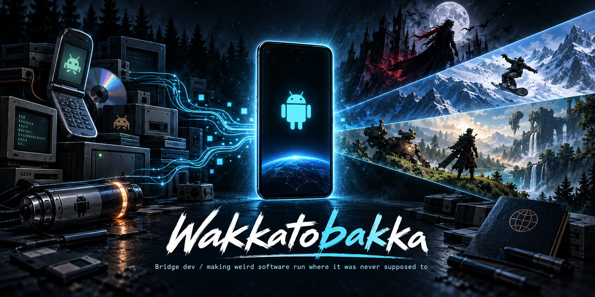

Wakkatobakka

I like taking software that was never supposed to run somewhere and figuring out how to get it there anyway.
Right now that mostly means old mobile games, unusual platforms, and modern Android — but I tend to follow whatever strange technical problem looks fun.
I didn't really come here because I wanted to learn how to code. I came here because I kept asking:
“Okay, but why can't we make it work?”
Turns out that's a pretty productive question.
See it running
Projects
Dirge Bridge
Bringing Dirge of Cerberus Lost Episode from its original Japanese mobile environment to modern Android.
Android Build Capsule
A reusable build environment for turning weird experiments into reproducible Android projects.
More bridge work
DeadShot Bridge, FFVII Snowboarding Bridge, Passport, and whatever strange thing I decide should run somewhere it wasn't meant to next.